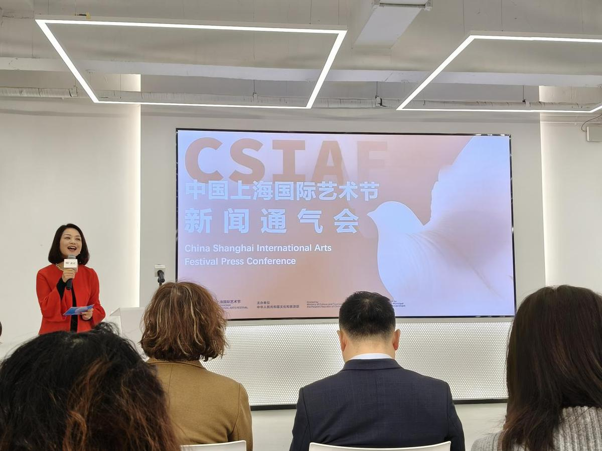

Musical 'Notre-Dame de Paris' returns to the Shanghai stage
Shanghai's music enthusiasts are in for a treat with the acclaimed French musical "Notre-Dame de
Paris" back on the city's stage to celebrate its 100th performance in Shanghai. This world-famous
musical, sponsored by France's Lancôme, made its debut at Shanghai Culture Square on January 3
for a dazzling 30-performance run until January 27.
First premiered in Paris in 1998, "Notre-Dame de Paris" has captivated audiences worldwide with its powerful
music and performances, creating productions in multiple languages including English, Spanish and Italian. It
has been recognized as the best-selling musical by Guinness World Records. With lyrics by renowned lyricist
Luc Plamondon and music by Richard Cocciante, the musical ingeniously blends elements of pop music into the
traditional musical theater framework, seamlessly combining operatic singing and rock music. The visually
stunning sets and electrifying performances bring to life the novel's exploration of the complexities of
human nature and the timeless battle between good and evil. The return of "Notre Dame de Paris" to Shanghai
once again brings Victor Hugo's timeless story to life for Shanghai's art lovers and invites audiences on a
time-traveling adventure. The production's 100th performance in Shanghai on January 18 marks a milestone
that highlights the continued passion for this epic musical in the city. Its themes of love, betrayal, and
redemption continue to resonate with Shanghai audiences. One of the highlights is the return of Daniel
Lavoie, the iconic actor known for his portrayal of the Archdeacon Claude Frollo in the original 1998
production. He reunites with Shanghai audiences this year to once again delve deep into the extremely
complex character – an archdeacon torn between faith and desire. The star-studded cast also includes Gian
Marco Schiaretti as the poet Gringoire, and Angelo Del Vecchio as Quasimodo, both renowned musical theater
actors known for their performances during China's Spring Festival Gala, as well as Damien Sargue, whose
powerful vocals celebrated the reopening of Notre-Dame de Paris cathedral on CCTV.

Shanghai Intl Arts Festival opens applications for programs
The 24th China Shanghai International Arts Festival has begun accepting applications for programs,
with the deadline set for March 31, announced by the event organizer during a press conference
held on Jan 21.
The Center for China Shanghai International Arts Festival said the art gala is actively seeking
applications from both esteemed domestic and international artists. The festival has a preference
for original art programs, particularly those making their debut in Shanghai and those exclusively
tailored for the city.
In a bid to foster creativity and innovation, the festival will allocate space for the presentation
of groundbreaking works by young artists worldwide, aged no older than 45. Through their art performances, the
festival aims to provide a platform for these artists to express themselves and convey meaningful messages on
a broader scale, with unwavering support for those selected at every stage.
The center has also released a comprehensive handbook that evaluates the 23rd edition of the CSIAF across
various metrics, including audience composition, brand recognition, economic impact, satisfaction rates, and
suggestions for future development.
Last year's festival saw the participation of over 16,000 artists from 80 countries and regions, showcasing a
total of 1,600 shows and exhibitions. Notably, the revenue generated by 56 major shows amounted to 70.25
million yuan ($9.65 million), marking a significant 25.5 percent increase compared to the previous year.
Drawing a diverse audience, the event attracted a total of 144,000 attendees to the theater, with 24.1 percent
hailing from cities beyond Shanghai and 7.8 percent from overseas. During the press conference, the event
organizer also unveiled the top 10 most influential shows from the previous year's edition, with six
performances by international groups and four by domestic artists taking center stage.

Shanghai Museum holds snake-themed exhibition to celebrate Chinese New Year
The Shanghai Museum is ringing in the coming Chinese New Year with a snake-themed exhibition
entitled Slithering into Spring: A Celebration of the Year of the Snake.
Opening on Jan 14, the exhibition features 13 artifacts related to snake imagery and symbolism. Eight pieces
are from the Shanghai Museum's own collection, while five are on loan from museums including the Yunnan
Lijiashan Bronze Museum and the Hubei Provincial Museum.
The exhibited objects span history from the late Shang Dynasty (c. 16th-11th century BC) up to the modern age,
originating from both China and abroad.
"For Chinese New Year each year, we present a special exhibition themed around that year's zodiac animal in
the rotating 12-year cycle," said Chu Xin, deputy director of the exhibition department at the Shanghai
Museum. "Being intimate and focused, the show this year has become quite popular."
In Chinese culture, the snake is revered as a "little dragon" — one of the primal forms from which dragon
imagery emerged. Its ability to slither on land and water, hibernate, and shed its skin for rejuvenation
imbue it with symbolic potency.
"The snake is an exceptionally dynamic and mysterious creature in ancient Chinese tales and mythology,
representing formidable power," Chu said. "This year's theme of 'slithering into spring' evokes the snake's
fluid, revitalizing movement bridging into the new season."
Shanghai Symphony Orchestra introduced a new concert series brand on Jan 10 with the performance of
Greetings to the Year of the Snake: SSO New Year's Concert 2025 with our Principals.
"The principals are a most valued asset of the orchestra," cellist Huang Beixing said before the show.
Huang has been a member of SSO for 29 years and was appointed principal of the cello section in 2001.
"From the gray-haired elderly musicians I saw when I first joined to us today – young and old, Chinese and
expatriates, I've witnessed and experienced the heritage of the principals at the company," he said. "The
principals of SSO have all displayed distinctive music personalities and strong techniques."
talian flutist Audisio who joined the SSO in 2021, said that he enjoyed working in Shanghai at SSO because he
loved the food and culture, and most importantly "We are a big professional orchestra, but I feel like we are
in a youth orchestra...there is lots of fun and energy all the time, and I have the space to try things with
my own instrument".
The five featured principals were violinist Zhu Minjia, cellist Huang, clarinetist Dai Le, trumpeter Xia Fei
and flutist Bartolomeo Audisio. They played under the baton of conductor Zhang Jiemin.
The program consisted of works by young Chinese composer Elliot Leung, and classical pieces such as Mozart's
Clarinet Concerto in A major, Piazzolla's Primavera Portena, Waltzes by Johann Strauss, Dvorak's Song to the
Moon, Faure's Fantaisie for Flute, and a new arrangement of Joaquin Rodrigo's beloved composition Concierto de
Aranjuez, featuring the trumpet.

Musical 'Notre-Dame de Paris' returns to the Shanghai stage
Shanghai's music enthusiasts are in for a treat with the acclaimed French musical "Notre-Dame de
Paris" back on the city's stage to celebrate its 100th performance in Shanghai. This world-famous
musical, sponsored by France's Lancôme, made its debut at Shanghai Culture Square on January 3
for a dazzling 30-performance run until January 27.
First premiered in Paris in 1998, "Notre-Dame de Paris" has captivated audiences worldwide with its powerful
music and performances, creating productions in multiple languages including English, Spanish and Italian. It
has been recognized as the best-selling musical by Guinness World Records. With lyrics by renowned lyricist
Luc Plamondon and music by Richard Cocciante, the musical ingeniously blends elements of pop music into the
traditional musical theater framework, seamlessly combining operatic singing and rock music. The visually
stunning sets and electrifying performances bring to life the novel's exploration of the complexities of
human nature and the timeless battle between good and evil. The return of "Notre Dame de Paris" to Shanghai
once again brings Victor Hugo's timeless story to life for Shanghai's art lovers and invites audiences on a
time-traveling adventure. The production's 100th performance in Shanghai on January 18 marks a milestone
that highlights the continued passion for this epic musical in the city. Its themes of love, betrayal, and
redemption continue to resonate with Shanghai audiences. One of the highlights is the return of Daniel
Lavoie, the iconic actor known for his portrayal of the Archdeacon Claude Frollo in the original 1998
production. He reunites with Shanghai audiences this year to once again delve deep into the extremely
complex character – an archdeacon torn between faith and desire. The star-studded cast also includes Gian
Marco Schiaretti as the poet Gringoire, and Angelo Del Vecchio as Quasimodo, both renowned musical theater
actors known for their performances during China's Spring Festival Gala, as well as Damien Sargue, whose
powerful vocals celebrated the reopening of Notre-Dame de Paris cathedral on CCTV.

Shanghai Intl Arts Festival opens applications for programs
The 24th China Shanghai International Arts Festival has begun accepting applications for programs,
with the deadline set for March 31, announced by the event organizer during a press conference
held on Jan 21.
The Center for China Shanghai International Arts Festival said the art gala is actively seeking
applications from both esteemed domestic and international artists. The festival has a preference
for original art programs, particularly those making their debut in Shanghai and those exclusively
tailored for the city.
In a bid to foster creativity and innovation, the festival will allocate space for the presentation
of groundbreaking works by young artists worldwide, aged no older than 45. Through their art performances, the
festival aims to provide a platform for these artists to express themselves and convey meaningful messages on
a broader scale, with unwavering support for those selected at every stage.
The center has also released a comprehensive handbook that evaluates the 23rd edition of the CSIAF across
various metrics, including audience composition, brand recognition, economic impact, satisfaction rates, and
suggestions for future development.
Last year's festival saw the participation of over 16,000 artists from 80 countries and regions, showcasing a
total of 1,600 shows and exhibitions. Notably, the revenue generated by 56 major shows amounted to 70.25
million yuan ($9.65 million), marking a significant 25.5 percent increase compared to the previous year.
Drawing a diverse audience, the event attracted a total of 144,000 attendees to the theater, with 24.1 percent
hailing from cities beyond Shanghai and 7.8 percent from overseas. During the press conference, the event
organizer also unveiled the top 10 most influential shows from the previous year's edition, with six
performances by international groups and four by domestic artists taking center stage.

Shanghai Museum holds snake-themed exhibition to celebrate Chinese New Year
The Shanghai Museum is ringing in the coming Chinese New Year with a snake-themed exhibition
entitled Slithering into Spring: A Celebration of the Year of the Snake.
Opening on Jan 14, the exhibition features 13 artifacts related to snake imagery and symbolism. Eight pieces
are from the Shanghai Museum's own collection, while five are on loan from museums including the Yunnan
Lijiashan Bronze Museum and the Hubei Provincial Museum.
The exhibited objects span history from the late Shang Dynasty (c. 16th-11th century BC) up to the modern age,
originating from both China and abroad.
"For Chinese New Year each year, we present a special exhibition themed around that year's zodiac animal in
the rotating 12-year cycle," said Chu Xin, deputy director of the exhibition department at the Shanghai
Museum. "Being intimate and focused, the show this year has become quite popular."
In Chinese culture, the snake is revered as a "little dragon" — one of the primal forms from which dragon
imagery emerged. Its ability to slither on land and water, hibernate, and shed its skin for rejuvenation
imbue it with symbolic potency.
"The snake is an exceptionally dynamic and mysterious creature in ancient Chinese tales and mythology,
representing formidable power," Chu said. "This year's theme of 'slithering into spring' evokes the snake's
fluid, revitalizing movement bridging into the new season."